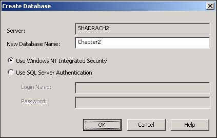

Note
The way that the Server Explorer and toolbox icons are laid out on the side of the screen varies according to how you set the Profile option in the My Profile settings on the Start Page-either Visual Studio Developer or Visual Basic Developer. |
Before working with a database, you have to be able to create it. Although you could use code to do this, you would rather do it right from Visual Studio. How do you create a new SQL Server database from within VS .NET?
As mentioned in the Introduction of this chapter, databases are basically file cabinets in computers. That sounds pretty simplistic, but if you take the information that you store in your file cabinets and transfer it over to the computer, you will end up with the same elements.
You can physically create a new SQL Server database in several ways:
Use SQL Server's Enterprise Manager to create the database.
Programmatically create the database. You can do this by using T-SQL and SQL-DMO, which are discussed in Chapters 6, "Creating Transact-SQL Commands," and 7, "Performing Common Database Tasks Using SQL-DMO," respectively.
Use a menu in the Server Explorer of Visual Studio .NET to perform this task.
You will use the last option to complete the task presented in this How-To.
To get started with this How-To, leave Visual Studio at the Start Page when you open it. Then place the cursor on the Server Explorer icon on the left side of the screen.
Note
The way that the Server Explorer and toolbox icons are laid out on the side of the screen varies according to how you set the Profile option in the My Profile settings on the Start Page-either Visual Studio Developer or Visual Basic Developer. |
After the Server Explorer has expanded, click on the plus symbol next to the Servers node. Then you can follow down the tree by clicking on your computer's name (SHADRACH2 in Figure 2.1) and then SQL Servers. Clicking on the name of the computer again, you will see the list of current databases that are set up by default in the Microsoft SQL Server Desktop Edition (MSDE). Although doing this was not necessary to create a new database, it does give you an idea of where you can see various databases in your system. Now you will learn how to create a database in VS .NET.
You can open the Create Database dialog box from within the Server Explorer in two ways. The first way is to right-click on the Data Connections node and choose Create New SQL Server Database. The second way is to right-click on the SQL Server instance to which you want to add the database-in this case, SHADRACH2-and then choose New Database. Although both methods open the Create Database dialog box, the second method fills in the server name for you.
Fill in the name of the database you want to create-in this case, Chapter2.
Choose the type of security that you want to use with this database. If your network is strictly a Windows 2000 network, you can leave this as the default-User Windows NT Integrated Security; otherwise, choose the option. Your Create Database dialog box should look like Figure 2.2.

Click OK to complete the dialog box and create the new database.
Now you when you click on the plus sign for the new database, you will see branches in the tree view of the Server Explorer for the different database objects, described in this chapter's introduction.
The Microsoft Visual Studio and SQL Server teams have gone to a lot of effort to make VS .NET the only design tool you need to use to create databases and their objects.
Sometimes you will need to perform tasks that are beyond what you can accomplish in the Server Explorer, but this chapter will stick to VS .NET. Now it's time to see how to create some of the objects that actually make a database useful.